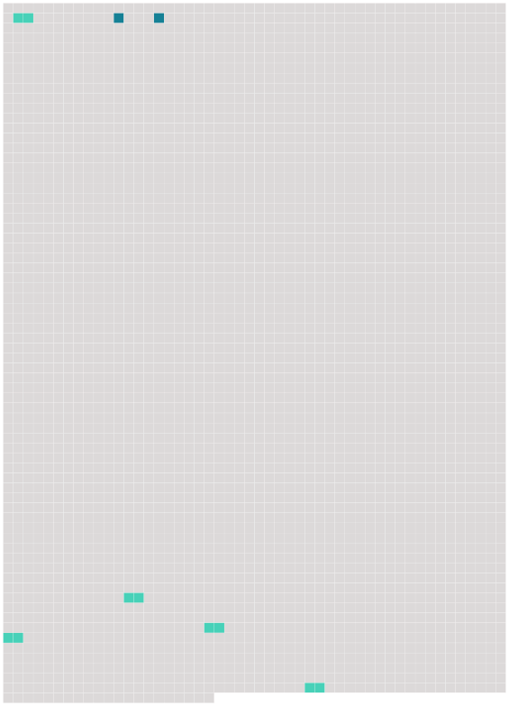

Longueur nb maillons : 7 mentions |
 |
Titre IV : Droits et obligations des membres de la commission [77 phrases]
Article XXX : Adhésion [3 phrases]
Après la date d'entrée en vigueur de la présente convention, pour [tout État] ou toute organisation régionale d'intégration économique qui satisfait aux exigences de l'article XXVII ou de l'article XXX, la présente convention entre en vigueur pour [cet État] ou cette organisation régionale d'intégration économique le trentième ( 30e ) jour suivant le dépôt de son instrument de ratification, d'acceptation, d'approbation ou d'adhésion. [9 phrases] Conformément à ses lois et règlements, [un État] ou une organisation régionale d'intégration économique qui satisfait aux exigences de l'article XXVII ou de l'article XXX de la présente convention peut appliquer provisoirement la présente convention en notifiant par écrit son intention au dépositaire. |
 |
La ressource peut être téléchargée sur la page Ortolang
Si vous avez des questions ou vous voyez des erreurs, merci d'envoyer un mail à silvia.federzoni89@gmail.com
Site développé par S. Federzoni (contact)